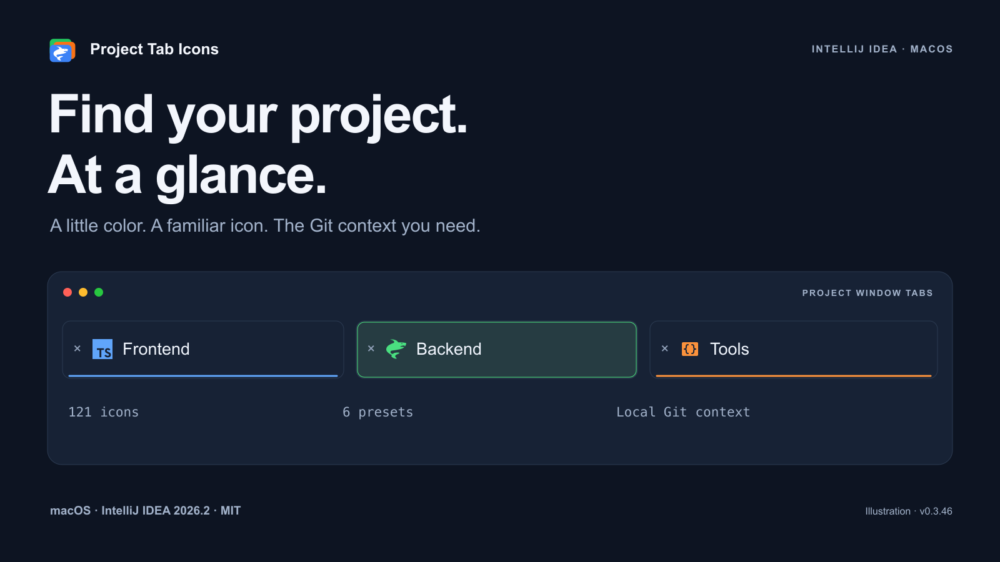
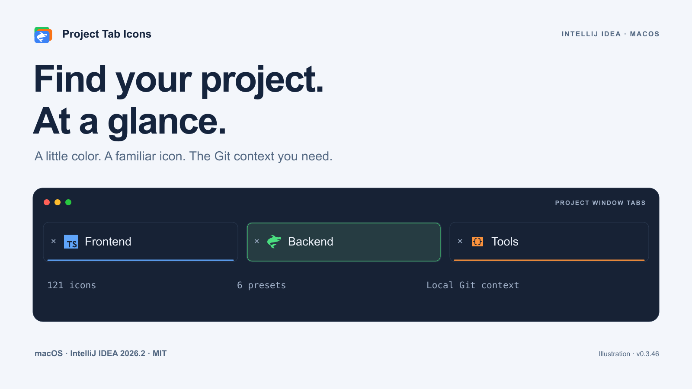
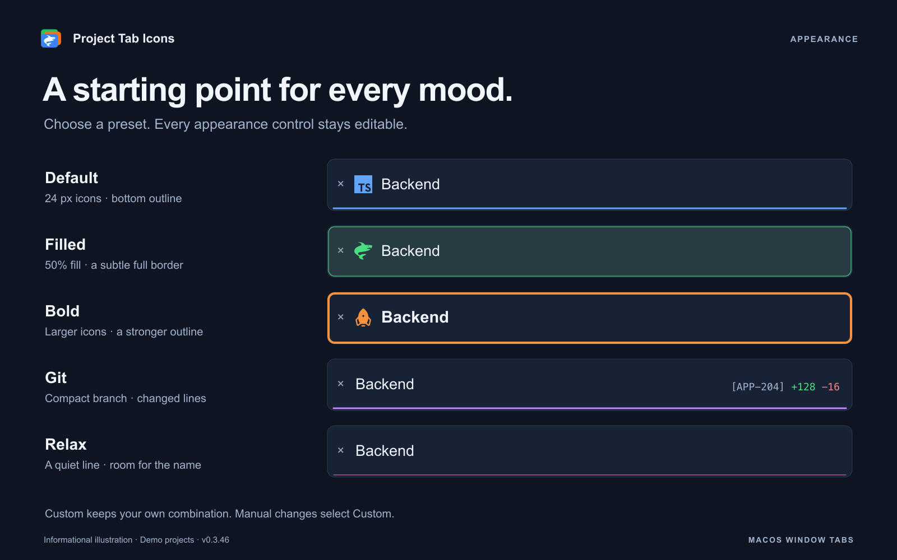
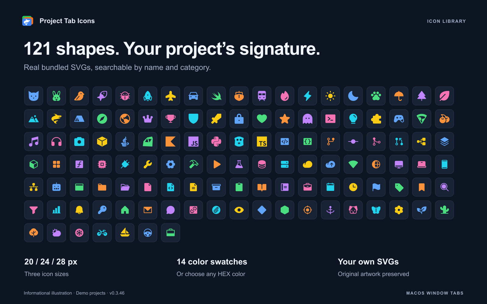
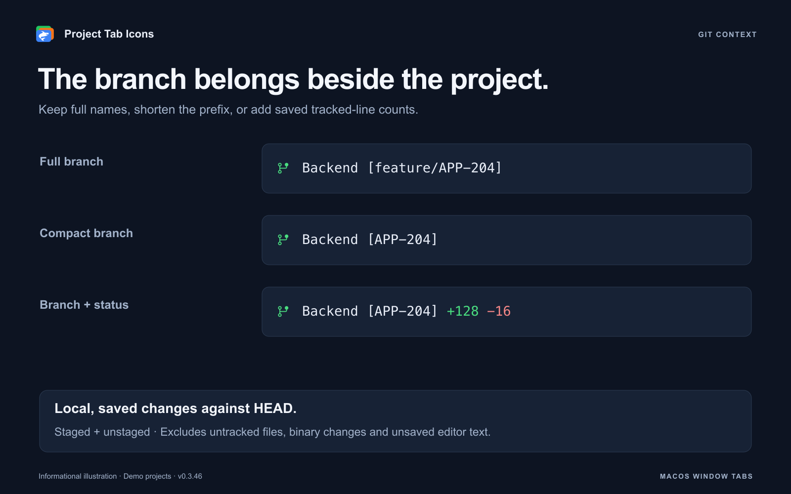
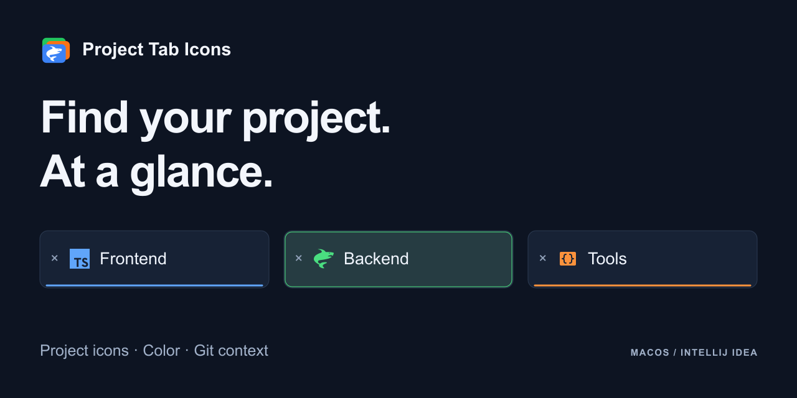

Project Tab Icons
GitHub presentation for v0.3.46. Original illustrations with neutral demo projects. Artwork comes from the plugin’s SVG resources; these are not runtime IDE screenshots.
English README · Русский README
Project Tab Icons — Find your project at a glance · 1600 × 900

Project Tab Icons — Find your project at a glance · 1600 × 900

Project Tab Icons appearance presets · 1600 × 1000

All 121 icons bundled in Project Tab Icons · 1600 × 1000

Git branch and line-count examples for Project Tab Icons · 1600 × 1000

Project Tab Icons GitHub social preview · 1280 × 640
